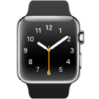
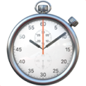
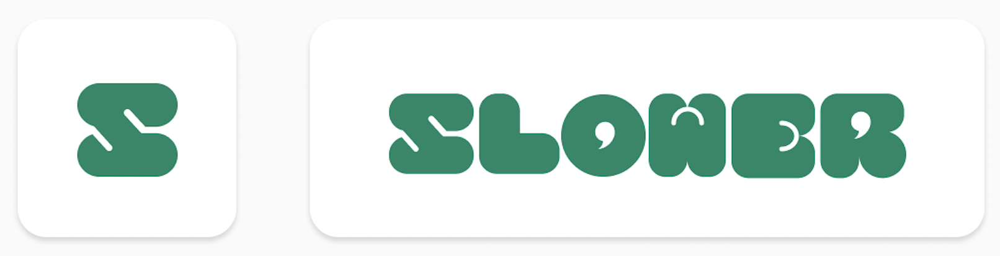

Project Goal
비만, 고지혈증 등 여러 질병의 원인이 되는 ‘빨리 먹는 식습관’ 문제를 개선함으로써
천천히 식사 할 수 있게 유도하여 건강하고 올바른 식습관을 형성하도록 도와주고자 합니다.
빨리 먹는 식습관을 개선하도록 도와줌으로써
올바른 식습관 형성에 도움을 주는 앱 서비스입니다
비만, 고지혈증 등 여러 질병의 원인이 되는 ‘빨리 먹는 식습관’ 문제를 개선함으로써
천천히 식사 할 수 있게 유도하여 건강하고 올바른 식습관을 형성하도록 도와주고자 합니다.
빠르게 먹는 습관은 씹는 시간이 충분히 확보되지 않아 소화 효율을 저하시켜
소화 장애, 위산 역류, 식도염 등 다양한 소화기 질환의 발생 위험을 증가시킵니다.
또한, 식사 중 식사량을 체감하기 전에 포만감을 느끼게 만들어 과식과 영양 결핍 등의
문제가 발생하여 우리의 건강에 부정적인 영향을 미치게 되었습니다.
학교에서도 편하게
식단을 기록하고 싶어요.
주로 생활하는 학교 내에서는 스마트폰 사용이 제한돼서 급식실이나 일상생활 어디서든 편하게
식단을 기록하면서 쉽게 건강 관리를 하고싶어요.
주로 생활하는 학교 내에서는 스마트폰 사용이 제한돼서 급식실이나 일상생활 어디서든 편하게 식단을 기록하면서 쉽게 건강 관리를 하고싶어요.
웨어러블 디바이스를 사용해 자유로운 식사, 식단 기록으로 효율적인 식사개선을 하길 원해요.
혼자 식사 속도를
제어하는게 어려워요.
혼 자 자취 생활을 하다보니 주위에서 빠르게 먹는 습관을 제어해줄 수 있는 사람이 없어요.
혼자서도 습관을 제어할 수 있었으면 좋겠어요.
혼자 자취 생활을 하다보니 주위에서 빠르게 먹는 습관을 제어해줄 수 있는 사람이 없어요. 혼자서도 습관을 제어할 수 있었으면 좋겠어요.
워치 없이도 스마트폰을 활용해 편리한 식사 속도조절 서비스를 제공받길 원해요. 혼자서도 식사속도를 제어하고 올바르게 습관이 개선되길 원해요.
디바이스의 편리한 연동으로 자유로운 식단기록 서비스 제공합니다.
식사 속도 조절 타이머와 맞춤 알람 기능을 활용해보세요.
앱 사용 지속성을 높이기 위한 출석체크 보상 서비스를 제공합니다.
유저 리서치를 바탕으로 서비스 키워드를 도출했습니다.
계속해서 성장하는 사용자를 응원하고 서비스와 사용자의 관계가 편안하면서 긍정적으로 연출될 수 있도록 했으며,
무겁지 않고 에너지 있는 서비스가치의 어울리는 기준을 선정하였습니다.
초록빛은 활력을 불어넣으며 트렌드를 보완하는 깊이있고 이상적인 컬러라고 생각해 슬로어의 서비스배경을
가장 잘 나타 낼 수 있다고 생각했습니다. 식습관 형성에 대해 너무 어렵게 다가가는것보다는 편안한 마음으로
사용되기를 바라면서 사용자와의 믿음직한 관계형성을 위해 긍정적인 분위기를 강조 했습니다.
친근하고 부드러운 인상을 남길수 있도록 전체적으로 동그랗고 볼드하게 표현하였으며 잠시 쉬어가는 뜻을 의미하는 쉼표를 이용해 도형을 결합시켜 로고를 제작했습니다.
